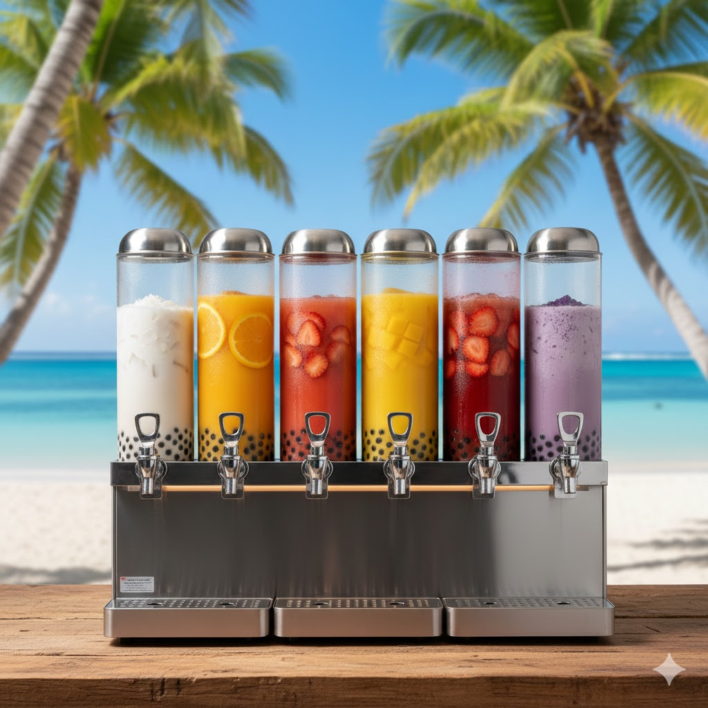

Cada Bubble Tea te dara un gran sabor, frescura y creatividad. Nuestra máquina está diseñada para ayudarte a servir bebidas irresistibles de manera rápida y sencilla, para la combinación perfecta en cada distribución.
Tecnología y creatividad para servir bebidas deliciosas de forma rápida y efectiva.
Fabricada con metal que garantiza mayor durabilidad, resistencia y seguridad durante la distribución de jugos y bebidas con Bubble Tea.
Permite elaborar jugos y bebidas con Bubble Tea en cuestión de segundos, optimizando el tiempo de trabajo y mejorando la eficiencia.
Garantiza una distribución uniforme de jugos, té y perlas de tapioca, ofreciendo un sabor irresistible en cada bebida.
Nuestra máquina distribuye el jugo sin generar calor, manteniendo intactas las vitaminas, minerales y enzimas naturales.
Gracias al material en frío, se conserva el sabor original de las frutas sin oxidación ni pérdida de frescura.
Este sistema permite obtener más jugo de cada fruta, aprovechando al máximo cada ingrediente natural.
Dato Curioso
Nuestras bebidas se envasan en botellas plásticas resistentes y seguras, estan puestas para conservar la frescura, mantener la calidad y ofrecer un sabor irresistible en cada sorbo.

Utilizamos maquinaria original que mantiene el sabor natural y la frescura en cada bebida.
Nuestra máquina mantiene los nutrientes y vitaminas sin aplicar calor.
Cada bebida es dispensada al momento para ofrecer el mejor sabor.
Sin conservantes ni químicos añadidos.